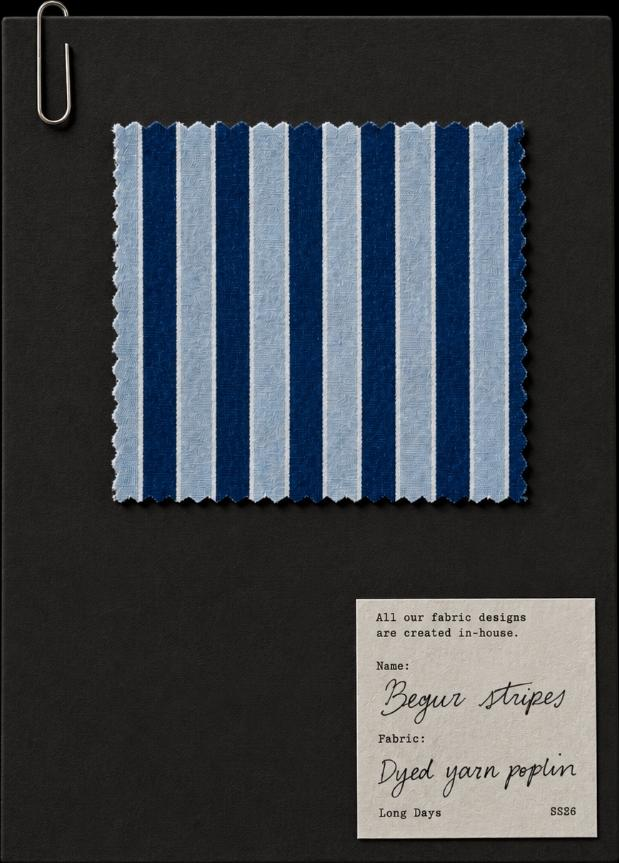
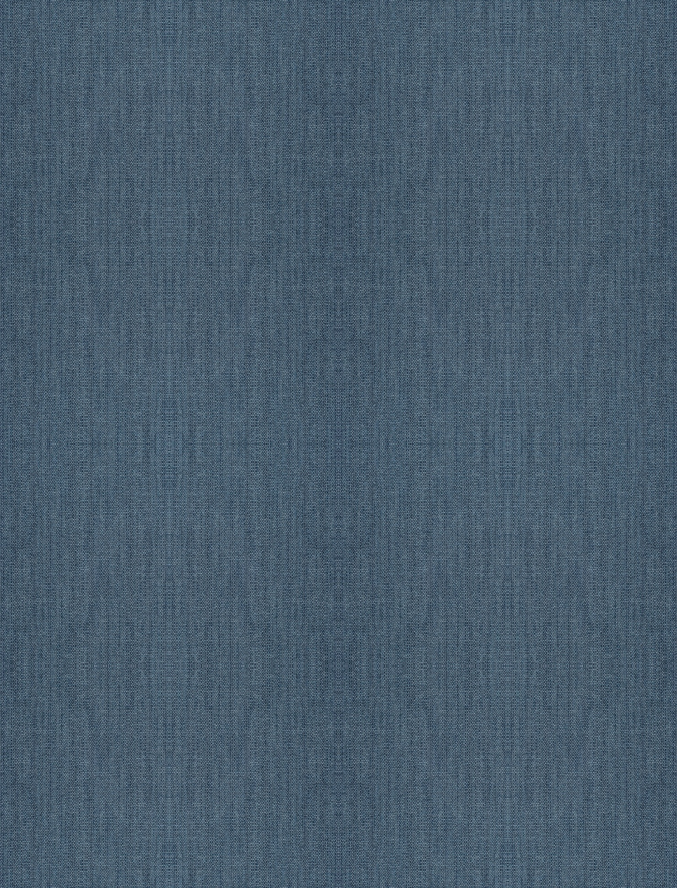
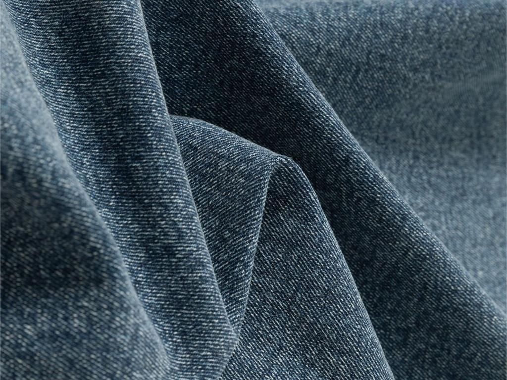
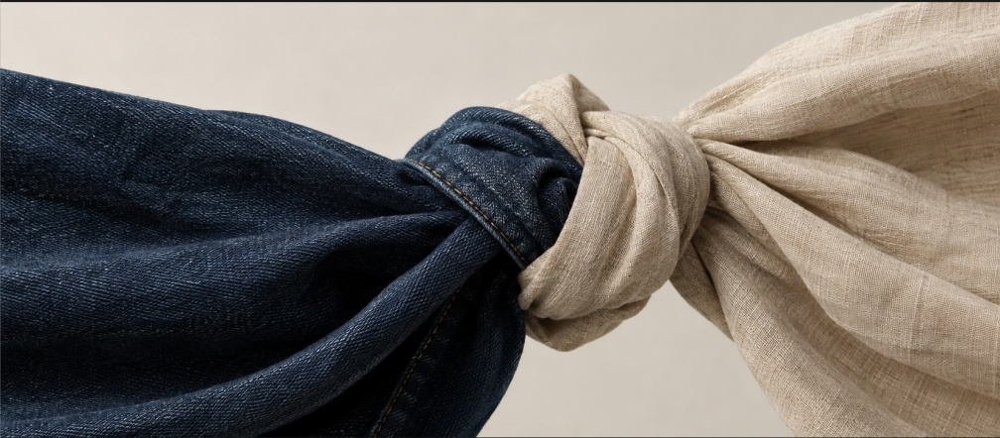
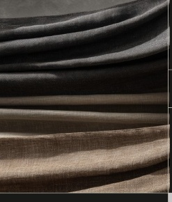
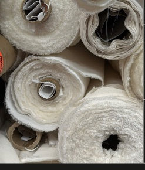
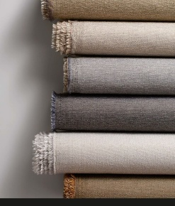
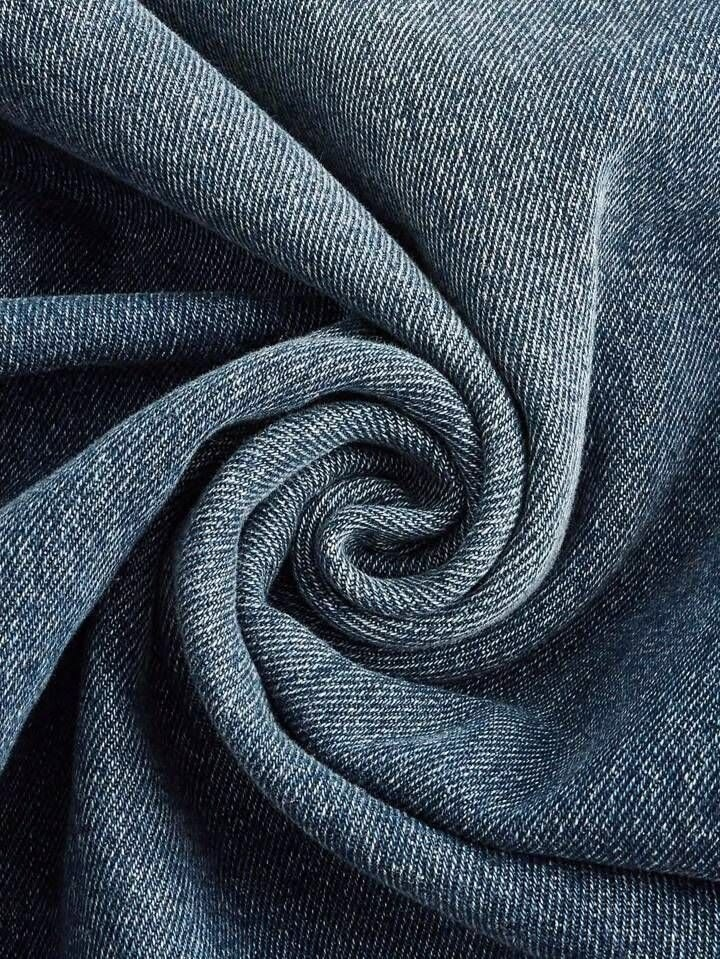

We have spent over 25 years sourcing fabric

Good garments begin long before the cutting table. They begin
with the right yarn, the right weave, the right mill. Indigo Multifab
has spent twenty-five years getting that part right.
Shirting weights from 4 to 7 oz and heavy weights
from 8 to 14 oz, in Lycra and non-Lycra, across cotton,
cotton poly and Tencel, rayon and modal blends.

Linen, corduroy, jacquard and dobby, alongside
cotton in every blend — for shirting, bottoms and
outerwear.

Sourced from the mills that supply India's leading brands.
We work directly with Arvind, KGN, Ginni, Bhaskar, LNJ and
other leading manufacturers — no intermediaries between
your requirement and the production floor.
When the fabric doesn't exist yet.
If a requirement can't be met from existing
production, we develop it with our mill partners —
from yarn selection and sampling through to final
production.

Every requirement is reviewed by our
technical team, who recommend the
right construction, weight, composition
and finish for the garment.
We find the best available option
across our mill network in India
and China — or develop it with our
mill partners when nothing
existing fits.

From sampling to bulk
production, we manage supply
through to delivery, with ready
stock available for common
fabrics.

Every garment begins as a decision about cloth �
the weight it carries, the way it falls, how it wears
over time. We help make that decision well.
From manufacturers and exporters to buying houses and fashion
brands, each partner needs something different. Our work begins by
understanding exactly what that is.

Tell us what you're making, and we'll come
back with the right cloth, a fair price, and a
timeline you can plan around.